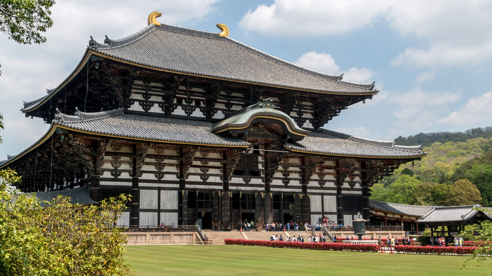
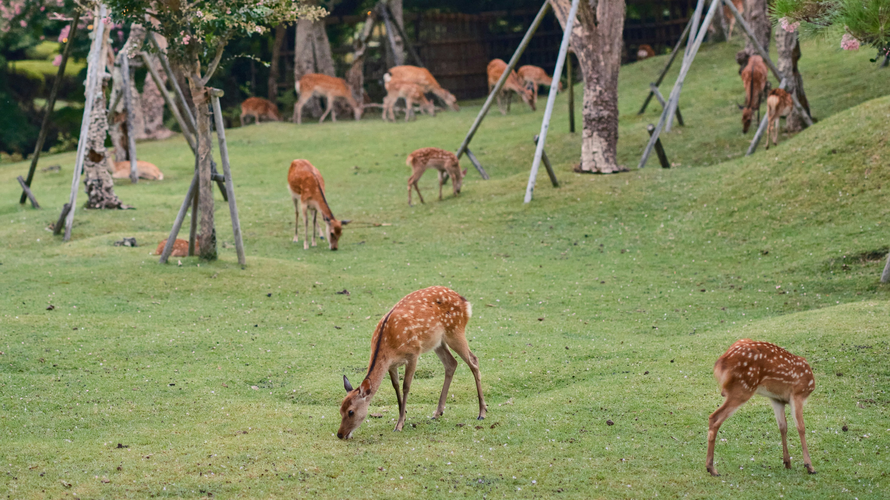
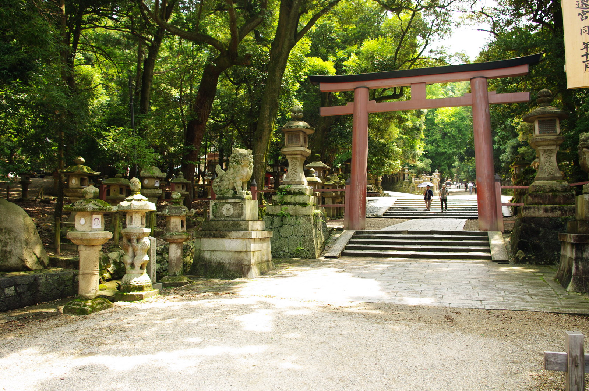

About
Nara Park (奈良公園), a public park with “bowing” deer, is located at the foot of Mount Wakakusa, in the heart of the city of Nara, Japan. It dates back all the way to the year 1880. Famous for its robust population of free-roaming deer,
Nara Park is a top attraction for many first-time visitors to Japan. Feeding special rice crackers to the deer is a very popular activity.
Laid out in 1880, Nara Park covers about 502 hectares, or around 660 if you count the grounds of Todai-ji, Kofuku-ji and Kasuga Taisha. It doesn’t feel like a fenced-off city park. It blends into the temples, forests and streets of the old capital. The park itself never closes and has no entry fee, so you can spend a full half-day here without buying a single temple ticket.
Related Link
Nara Park Official Sites
(https://narapark.org/)
Nara Park Quick Guides
(https://www.pref.nara.lg.jp/site/park/index.html)
Location
Gallery

Photo by Vladimir Haltakov on Unsplash

Photo by Stephen H on Unsplash

By User: Bgabel at wikivoyage shared, CC BY-SA 3.0, Link